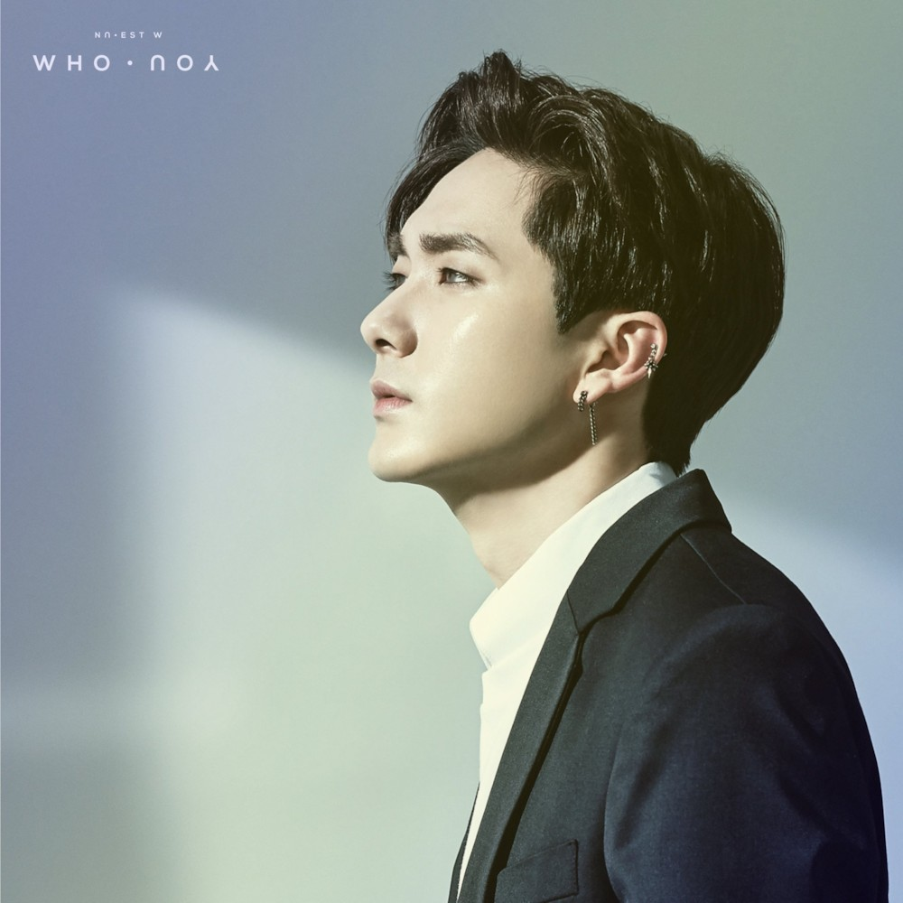

대한민국의 5인조 보이그룹 뉴이스트의 멤버. 멤버들 중 유일한 93년생으로[15] 팀의 맏형이자 유일한 연장자이다. 맏형이지만 키와 정신연령은 막내 서브보컬과 애교담당, 서브래퍼를 맡고 있다. 미국 LA 출신으로, 외국 국적이나 부모님이 양측 다 한국인인 한국계 미국인2세이다. LA에서는 상당한 우등생으로 이미 뉴욕대 NYU 저널리즘학과에 합격장을 따둔 상태였다.[16][17] 그러던 어느 날, 손담비의 '미쳤어' 무대 영상을 보고 감명을 받아 손담비의 당시 소속사인 플레디스 홈페이지를 찾아 보았고, 친구의 추천으로 거기서 우연히 플레디스 LA 오디션이 열린다는 소식을 접한 후 그 오디션에 참가해 1등을 거머쥐게 되었다. 이후 뉴욕대 입학을 포기하고 보컬과 춤 연습을 하며 부모님의 동의를 구해,[18][19] 한국으로 와 9개월의 연습생 생활 끝에 뉴이스트로 데뷔하였다. 데뷔 경위를 회고하는 뉴이스트 멤버들이 "아론형은 당연히 1순위 멤버" 였다고 표현할 정도로 강력한 데뷔조 멤버로 손꼽히는 등 회사의 전폭적 지지를 받았던 듯 보인다. 예명인 아론은 영문식 이름이자 세례명 아론에서 따온 것이다. 한국식 이름인 곽영민은 부모님의 성함에서 한 자 씩 따온 것으로[20] 한국 본명이다. 이름에 관한 일화로 곽영민이라는 이름을 멤버 민현이 지어 주었으며 본명이 아니라는 말이 돌았으나, 2017년 6월 18일 아론이 공식 팬카페에 민현이 아니라 부모님이 지어준 이름이라고 인증했다. 황민현 의문의 작명가행 또한, 뉴이스트 중 유일하게 무릎 부상으로 인해 프듀에 참가하지 않은 멤버이다. 2. 포지션[편집] 2.1. 보컬 & 랩[편집] 고음역대 보컬들이 즐비한 뉴이스트에서 저음역대의 중심을 잡아주는 보컬이 바로 아론이다. 데뷔 초부터 안정적인 라이브로 제 역할을 잘 소화해냈다. 랩은 보통 영어랩을 담당한다. 모 뉴이스트 팬이 "아론의 첫인상은 노래하는 래퍼인가, 랩하는 보컬인가에 대한 혼돈이었다"고 말했을 정도로 양쪽 모두 수준급의 실력이다. 데뷔 초 앨범의 타이틀곡과 수록곡에서 보컬 파트만큼 영어랩의 비중도 꽤 컸으나, 최근 앨범에는 몇 곡[21]을 제외한 대부분의 랩파트를 리더에게 넘기고 있다. 2017년 7월 31일 발매된 레이나의 타이틀곡 '밥 영화 카페'에서 랩 피처링을 맡았는데, 팬들은 오랜만에 아론의 랩을 볼 수 있어서 좋았다는 반응을 보였다. 플레디스 입사 오디션에서는 Ne-Yo의 'So Sick'를 불렀다고 데뷔초에 슈키라에서 언급했다.31분쯤부터 2.2. 언어[편집] 뉴이스트에서 유일하게 유창한 영어 회화가 가능한 멤버로, 뉴이스트가 그토록 다국적 해외 활동을 할 수 있었던 데에는 아론의 언어 능력이 중점적으로 작용했다. 국내 활동보다 해외 활동이 더 많은 뉴이스트에서 해외 인터뷰는 거의 아론이 혼자 다 한다고 볼 수 있다. 영어가 당연히 제1언어이며, 미국에서 살 때만 해도 한국어를 거의 하지 않았던 듯[22] 연습생 생활을 위해 한국으로 온 이후부터 배우기 시작했음에도 나름대로 꽤 능숙하게 의사소통 하는 모습을 보여준다. 주결경도 그렇고 플디의 한국어 가르치는 방법이 궁금할 정도 다만 팬사인회 등에서 실제로 대화를 나눠 보면 방송에서 보여지는 것 보다 말이 안 통한다는 후기가 있다(...). 실제로 2016년에 출연한 방송에서 "제복이 뭐에요?"라고 물어보고 백호가 유니폼이라고 답해주자 그제서야 이해하는 모습을 보였다. 2018년 L.O.Λ.E RECORD B-side에서는 백호와 월미도로 드라이브를 가며 '도'자가 붙은 곳은 모두 섬이라며 경기도와 강원도도 섬이라는 백호의 농담에 속는 모습을 보여주었다. 이어 해외도 섬인 곳은 '도'자를 붙여야 한다며 훗카이도를 예로 드는 그럴싸한 설명에 완전히 속아 넘어갔다(...)하와이도? 영어권 출신 멤버들이 그렇듯 한자어에 약한 듯 보인다. 다만 뉴이스트의 주요 해외 활동지였던 일본에서 활동할 때는 일본어가 많이 서툴어 방송에서도 한국어로 말하고, 하단에 자막 처리가 되거나 민현이 일본어 해석을 하는 등 일어 실력이 부족한 모습을 보였다.[23] 2.3. 비주얼[편집] 뉴이스트 멤버들이 인정하는 비주얼 멤버 뉴이스트가 "가장 잘생긴 멤버"를 뽑을 때마다 빠지지 않고 거론되는 멤버이다.[24] 특히 아론의 미모가 두드러졌던 데뷔 초에는 아론의 비주얼에 크게 반한 민현이 틈만 나면 "아론형은 잘생겼다"는 말을 달고 살 정도였는데, 그토록 자기애가 투철한 민현이 아론을 자신보다 외모 상위권으로 놓고, 친 누나를 소개시켜 주고 싶은 멤버로 꼽을[25] 때 역시 아론이 잘생겼다고 강조할 만큼 각별한 면모를 보였다.[26] JR 역시 실물이 가장 잘생긴 멤버로 아론을 뽑는 등 멤버들의 전폭적인 비주얼 칭찬을 들었다. 활동이 거듭되면서 외모가 많이 바뀐 편으로, 컨셉 역시 많이 바뀌었다. 정규 1집 'Re:BIRTH' 에서는 문신 복근 화보를 찍어 미국 태생 모델 같은 포스를 뽐내기도 했다. 뉴이스트의 다른 멤버들인 JR, 백호, 민현, 렌이 정말 완전히 제각기 생겼는데, 그 얼굴들이 자연스레 섞이게 하는 얼굴이다. 실제로 아론을 제외한 네 멤버의 얼굴 사진을 겹치면 아론과 매우 닮은 얼굴이 된다. 음악적인 부분에서도 그렇고 비주얼적인 부분에서까지 팀의 베이스를 지탱해주는 멤버. 그리하여 강김최황이 좌표평면의 4분면마냥 제각기 생겼는데 아론이 (0,0)에서 있어서 그라데이션이 된다는 드립이 꽤 흥했다. 공연에서 실물을 접한 팬들의 증언을 들어보면 "카메라를 부셔야 한다", "현대 광학 기술에 염세를 느낀다"라는 말을 할 정도로 실물이 사진에 비해 훨씬 낫다고 한다. 그 입체감은 말로도 사진으로도 영상으로도 설명할 수 없으니 꼭 실물로 봐야 한다고. 닮은 꼴로는 웰시코기가 꼽힌다.
